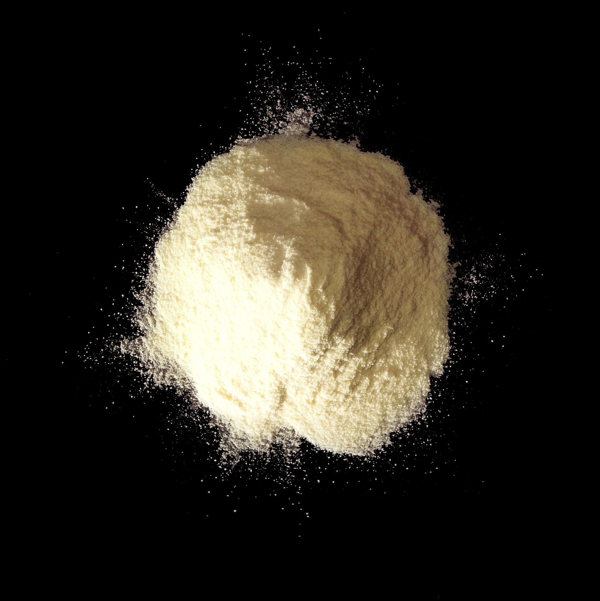

Ferrous sulfate


13463-43-9
Synonyms or siblings
Ferrous sulfate, heptahydrate, Green vitriol, Iron vitriol, Copperas, Melanterite
Funtion
Nutrient - Enriching Agent
Description
Ferrous sulfate, derived from sulfur refined from crude oil and used in steel pickling, enriches flour to combat iron deficiency. Most ferrous sulfate, however, is used in industrial products like fabric dye and water purification. Reduced iron is a cheaper alternative but less effective for flour enrichment.
다양한 이름
황산 제일철
기능
영양강화제
설명
황산철은 일반적으로 고체나 용액의 형태로 존재하는 일반적인 무기 화합물이다. 황산철은 식품의 철분 함량을 높이기 위해 곡물, 쌀, 밀가루 및 기타 식품에 첨가되는 영양강화제의 역할을 하며, 이는 임산부, 모유수유 여성, 어린이 등 추가적인 철분 섭취가 필요한 사람들의 건강한 적혈구 형성과 기능 촉진을 돕는다.